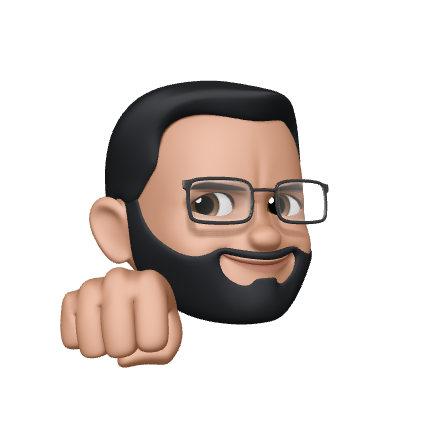

Hello there! I'm Avyay
General Kenobi

I focus on the small details and generate big impact. As an HCI researcher and designer, my work primarily lies at the intersection humans and technology. I am currently pursuing my Masters in Human Computer Interaction Design at Indiana University Bloomington.
ARKLid
Graduation Thesis Project 2
January - June 2020
ARKLid is an assistive device that enables the visually impaired prepare meals that involve roasting. A design was conceptualised and prototyped.
ASSETS 2020 SRC
Publication
October 2020
Published my work at The 22nd International ACM SIGACCESS Conference on Computers and Accessibility in the Student Research Competition.
POAKme
Masters Thesis Project 1
July - November 2019
POAKme is a solution that enables individuals with Osteoarthritis of the Knee access care and rehabilitation from their homes.
Gestural Interactions
Bachelor Thesis Project
February - June 2019
An exploratory project on understanding gestures as an interactive modality and their potential application in real world scenarios .
Jio Platforms Limited
UX Designer
August 2020 - July 2022
My work at Jio included setting up a framework to access the design system, revamping the HR portal and creating fun and engaging experiences on the JioMart e-commerce app.
PhysioDot
Course Project
Exchange Semester | HfG Schwäbisch Gmünd
September 2018 - February 2019
PhysioDot is an application that allows patients to perform their physiotherapy exercises from the comfort of their homes.
Emotion Sensing in Healthcare
UX Design Internship
May - July 2018
Worked on a concept project to detect early signs of Conduct Disorder in children through emotion sensing technologies and IoT.
Getting Rid of 2D Chaos
Course Project
September 2017
GR2DC is an application that enables individual drivers to improve their on-road driving through real-time and post journey feedback.
Physical Microinteractions
Course Project
November 2017
Studied microinteractions in the physical world and created a framework and to aid in their classification along with an interface to help imagine these new interactions.